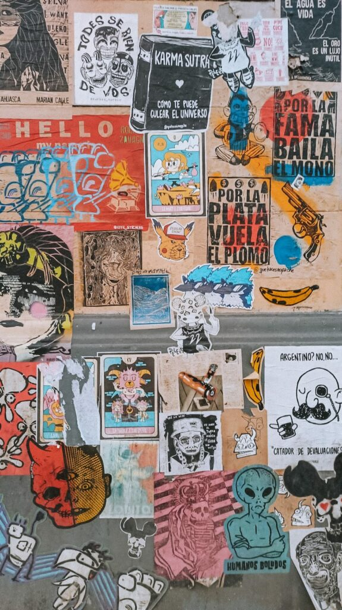

>Con sus calles arboladas y de casas bajas, el barrio mantiene una memoria activa y una defensa de su identidad que sigue viva gracias a sus vecinos y festivales. Muchas de sus paredes están pintadas de amarillo y azul, representando el amor por el Club Atlanta, que es pilar de encuentro social para las familias y amigos del barrio.
El Mercat de Villla Crespo está ubicado sobre la calle Thames, altura 747. Se trata de una atractiva y colorida calle que une los barrios porteños de Palermo y Villa Crespo y la cual se destaca por la presencia de todo tipo de espacios gastronómicos como modernas cafeterías, restaurantes temáticos, patios cerveceros, hasta galerías de arte y rincones de expresión cultural, entre otros. La revista Time Out (edición Reino Unido) distinguió a Thames como una de las 10 calles más ‘cool’ del mundo, por lo que visitar Mercat Villa Crespo resulta un buen plan para animarse a explorarla.
